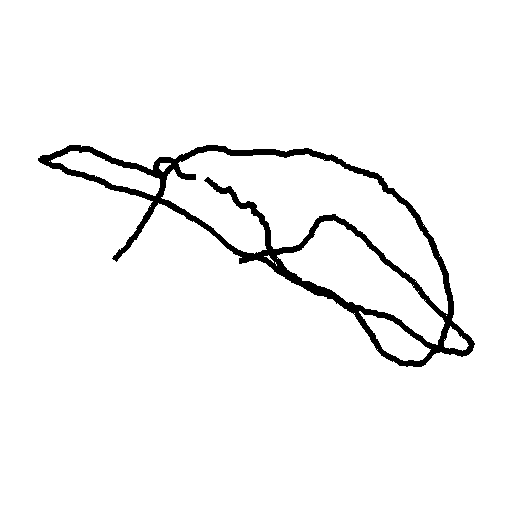
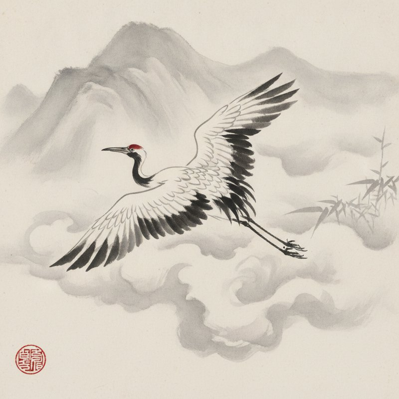
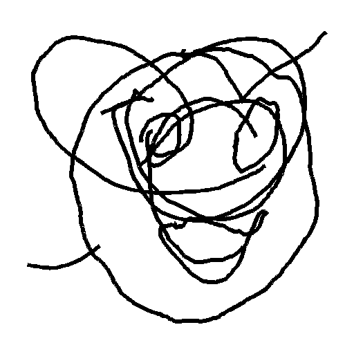
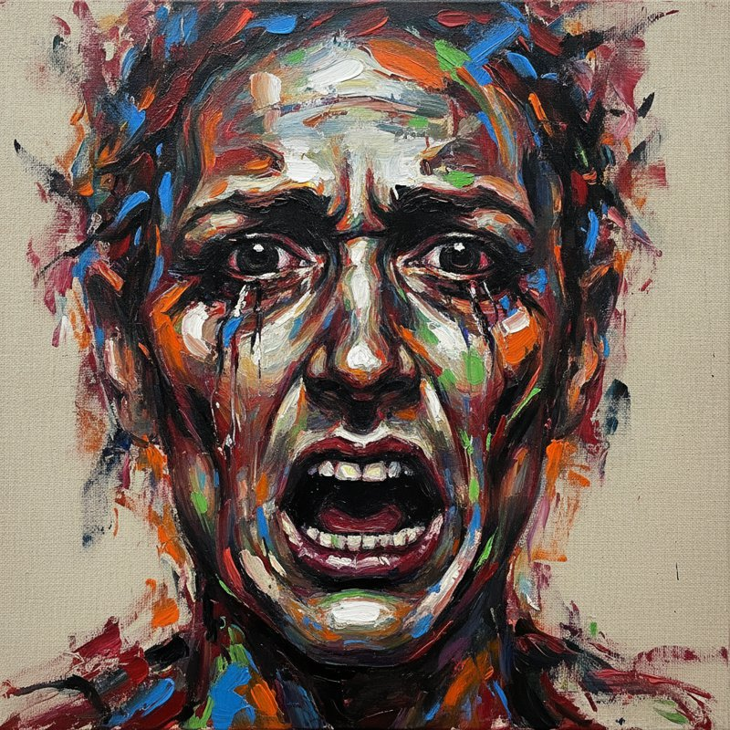
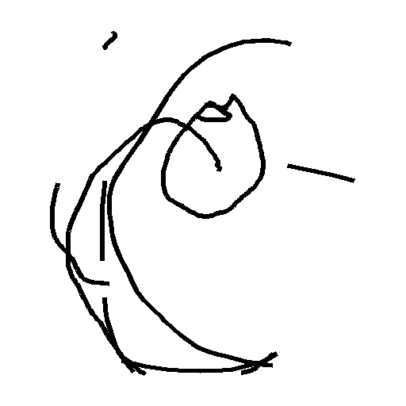
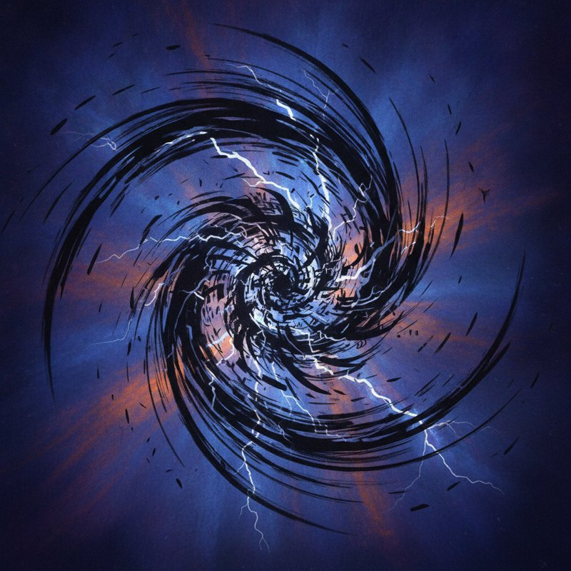

An interactive installation you play with your bare hand. No pen. No touch. Just air.
A weak electric field hangs above the sensor. Your hand bends it, and the installation turns that into light.
Hold your hand above the board and a cursor appears, following your every move — the field sees you before you touch anything.
Drop your hand and the pen touches down: movement becomes glowing ink. Raise it to lift the pen between strokes.
Raise your hand and draw a little circle in the air — the ink changes colour.
Flick your hand across the field and the canvas wipes itself clean.
The AI studies your sketch, names it, and paints its own version — shown side by side with yours.
Real pairs from the installation — a sketch drawn in mid-air, and what the AI made of it.






Every sensor is a doorway onto the same shared canvas. Different stations, different rooms, different cities — one picture, drawn together, then reimagined by AI as a single artwork no one made alone.
On show today: a single station — the first node of that network, with the full sensing, drawing and AI pipeline running end to end.
The Skywriter board projects a weak electric field a few centimetres into the air. A hand entering the field distorts it, and the MGC3130 chip resolves that distortion into a continuous 3D position — in any lighting.
The pipeline calibrates the usable field range, removes spikes with a median window and spike gate, then smooths the path with a One-Euro filter. Height hysteresis turns hand raises into clean pen-up and pen-down events.
A finished drawing is rendered to a clean sketch and sent to a vision language model, which names it and prompts an image generator. Seconds later, your air-drawing returns as a finished illustration.